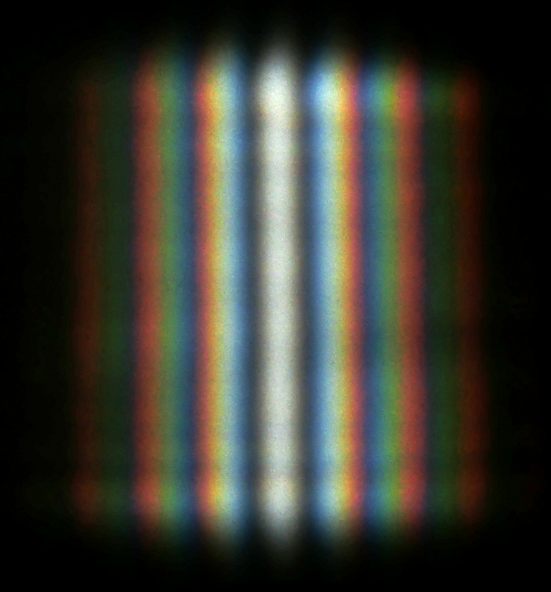
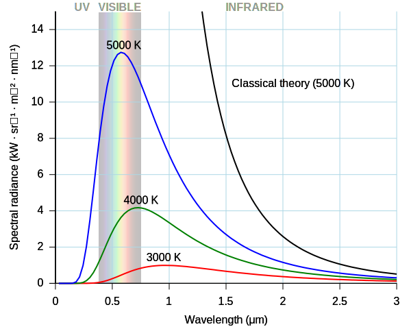
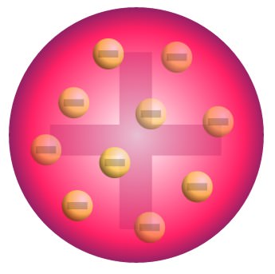
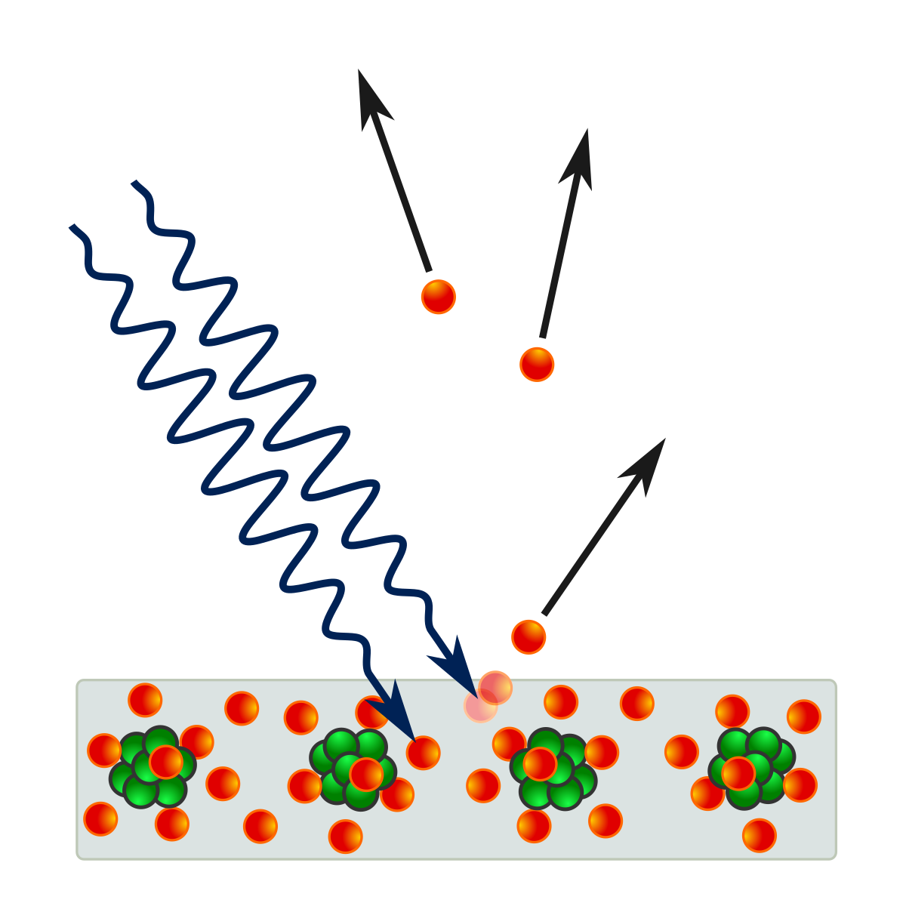
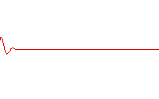

Wave-particle duality
The wave theory and blackbody radiation
Prior to the 20th century there were numerous theories about the nature of light. One such prominent theory was the wave theory of light. In 1801, this theory was strengthened by the double-slit experiment which showed that light interferes like a wave. Soon, the wave theory became the dominant theory on the nature of light as it could also explain phenomena such as the polarisation of light.

However, following the turn of the century, Max Planck found a solution to a pre-existing problem with weird assumptions (at the time). Planck was working on a theoretical model for the wavelengths of light emitted by a blackbody (A theoretical perfect absorber of energy) at given temperatures. Previous attempts used known theories of light and energy and failed to describe the phenomena for higher frequencies this was known as the "ultraviolet catastrophe".

However, Planck was successful because he made rather strange assumptions. One of the key assumptions was that the energy emitted or absorbed by a blackbody was quantised, or in discrete packets as opposed to continuously being emitted or absorbed and that the energy of each packet was described as such
where \(h = 6.626 \times {10}^{-34} Js\) (known as planck's constant) and \(f\) is frequency. With this, and some other key assumptions Planck was able to determine the formula to explain blackbody radiation.
Planck made the assertion that only the energy of radiating atoms was quantised and not that light itself was quantised and the wave theory while slighlty shaken, held strong.
The electron and the photoelectric effect
Around the same time, JJ Thompson discovered the first subatomic particle known as the electron through the cathode ray experiment. The electron had a negative charge and it was speculated that atoms consisted of a positively charged volume with electrons. This was known as the plum-pudding model.

Delocalised mobile electrons in certain elements and compounds (such as metals and alloys) can move to create a current when there is a voltage difference between regions.
A few years prior to the discovery of the electron, Heinrich Hertz observed the photoelectric effect. He saw that when you place 2 metal spheres very close to each and shone light, sparks would be observed between the 2 spheres.

Thompson showed that these sparks were electrons. To explain this classical physicists suggested that the oscilating electric field of the light wave was heating electrons and causing them to vibrate, eventually providing them with enough energy for it to overcome the attraction to the positively charged cloud of the atom. They came to this assumption with the wave theory of light and predicted that the KE of emitted electrons should be proportional to the amplitude of the light wave and that the rate of electron emission (or current) should be proportional to the frequency. However, both these assumptions were proven to be wrong. It was found experimentally that KE increases with frequency and current increases with amplitude. It was also found that for light with low frequency, the effect was not observed regardless of intensity. This was a big shock and brought into question the wave theory of light.

However, Albert Einstein came to the rescue and explained this phenomenon while buidling on Planck's work. He first realised that unlike what Planck asserted, light itself was quantised and was behaving like it was composed of tiny particles (now known as photons) where each particle had an energy proportional to its frequency.
This explained the fact as to why the kinetic energy increased with frequency because since energy could only be transmitted discretely as compared to a continuous wave, only photons with high enough energy were able to free the electrons from the surface when hit regardless of the amplitude of the wave. It also explained why current increased with amplitude because an increase in amplitude caused and increase in the amount of photons hitting the metal surface.

Of course, Einstein realised that light could not be just a particle because particles collide and light interferes so he postulated that light as consisted of spatially localized, discrete wave-packets. These wave-packets have properties of both wave and particles because they interfere like waves but are still localised like particles.